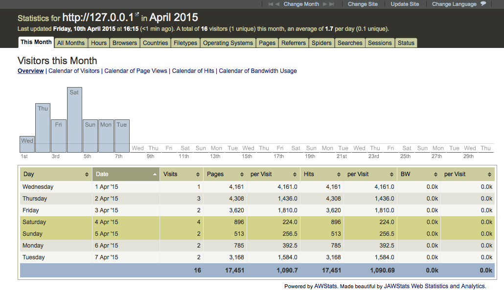

Catalogue
- About awstats and jawstats
- Environment
- Install awstats
- Install jawstats
- More about awstats
- More about jawstats
About awstats and jawstats
AWStats is a free powerful and featureful tool that generates advanced web, streaming, ftp or mail server statistics, graphically. Its official website is www.awstats.org. JAWStats is a free web statistics and analytics package. It reads log files created by the ever-popular AWStats web statistics software and outputs the information in it's own format. Its official website is http://www.jawstats.com
Environment
OS: Mac OS X Yosemite 10.10.2 Web server: Apache/2.4.9 (Unix) Website name: 127.0.0.1 Path of apache log file: /var/log/apache2/ Path of apache configure file: /etc/apache2/httpd.conf Path of awstats: /Library/WebServer/Documents/ Path of jawstats: /Library/WebServer/Documents/ Path of awstats data: /var/lib/
Install awstats
Document: http://www.awstats.org/docs/awstats_setup.html
Before install awstats, the perl should be ready in your server.
1. Download the awstats on official website: http://www.awstats.org/#DOWNLOAD. The version of awstats we had downloaded is "Last stable version 7.3 - 2014-07-23 07:50".
2. Explode the package to "/Library/WebServer/Documents/awstats". Change the authority of these package and perl (if you don't do this, when you run awstats perl or use browser to see the result, you may be reminded of "can't access to"):
$cd /Library/WebServer/Documents
$chmod -R 755 awstats
$chmod +x awstats/tools/*.pl
$chmod +x awstats/wwwroot/cgi-bin/*.pl3. Create the data directory "awstats" to store awstats data:
$cd /var/lib
$mkdir awstats4. Run the configure script:
$cd /Library/WebServer/Documents/awstats/tools
$perl awstats_configure.pl5. The process when the script is running:
sheqingbindeMacBook-Air:tools sheqingbin$ sudo perl awstats_configure.pl
----- AWStats awstats_configure 1.0 (build 20140126) (c) Laurent Destailleur -----
This tool will help you to configure AWStats to analyze statistics for
one web server. You can try to use it to let it do all that is possible
in AWStats setup, however following the step by step manual setup
documentation (docs/index.html) is often a better idea. Above all if:
- You are not an administrator user,
- You want to analyze downloaded log files without web server,
- You want to analyze mail or ftp log files instead of web log files,
- You need to analyze load balanced servers log files,
- You want to 'understand' all possible ways to use AWStats...
Read the AWStats documentation (docs/index.html).
-----> Running OS detected: Mac OS
Warning: AWStats standard directory on Mac OS X is '/Library/WebServer/awstats'.
If you want to use standard directory, you should first move all content
of AWStats distribution from current directory:
/Library/WebServer/Documents/awstats
to standard directory:
/Library/WebServer/awstats
And then, run configure.pl from this location.
Do you want to continue setup from this NON standard directory [yN] ? y
-----> Check for web server install
Enter full config file path of your Web server.
Example: /etc/httpd/httpd.conf
Example: /usr/local/apache2/conf/httpd.conf
Example: c:\Program files\apache group\apache\conf\httpd.conf
Config file path ('none' to skip web server setup):
> /etc/apache2/httpd.conf
-----> Check and complete web server config file '/etc/apache2/httpd.conf'
All AWStats directives are already present.
-----> Update model config file '/Library/WebServer/Documents/awstats/wwwroot/cgi-bin/awstats.model.conf'
File awstats.model.conf updated.
-----> Need to create a new config file ?
Do you want me to build a new AWStats config/profile
file (required if first install) [y/N] ? y
-----> Define config file name to create
What is the name of your web site or profile analysis ?
Example: www.mysite.com
Example: demo
Your web site, virtual server or profile name:
> 127.0.0.1
-----> Create config file '/Library/WebServer/Documents/awstats/wwwroot/cgi-bin/awstats.127.0.0.1.conf'
Config file /Library/WebServer/Documents/awstats/wwwroot/cgi-bin/awstats.127.0.0.1.conf created.
-----> Add update process inside a scheduler
Sorry, configure.pl does not support automatic add to cron yet.
You can do it manually by adding the following command to your cron:
/Library/WebServer/Documents/awstats/wwwroot/cgi-bin/awstats.pl -update -config=127.0.0.1
Or if you have several config files and prefer having only one command:
/Library/WebServer/Documents/awstats/tools/awstats_updateall.pl now
Press ENTER to continue...
A SIMPLE config file has been created: /Library/WebServer/Documents/awstats/wwwroot/cgi-bin/awstats.127.0.0.1.conf
You should have a look inside to check and change manually main parameters.
You can then manually update your statistics for '127.0.0.1' with command:
> perl awstats.pl -update -config=127.0.0.1
You can also read your statistics for '127.0.0.1' with URL:
> http://localhost/awstats/awstats.pl?config=127.0.0.1
Press ENTER to finish...Something you should notice when you run the configure script: 1. We should run the awstats_configure.pl as root. 2. The configure script advances us to change the current directory from "/Library/WebServer/Documents/awstats" to standard directory "/Library/WebServer/awstats". But we don't do that and just continue. 3. When we create a new config file, the file will be in directory "/Library/WebServer/Documents/awstats/wwwroot/cgi-bin". In this example, the config file name is awstats.127.0.0.1.conf(awstats.your_input_sitename.conf). 4. When the formate of your apache log file is common, the script will ask you to change the formate of your log file to combined and you should answer "y".
6. After running the configure file, we should change manually main parameters of configure file "/Library/WebServer/Documents/awstats/wwwroot/cgi-bin/awstats.127.0.0.1.conf" and "/etc/apache2/httpd.conf". After configuring, restart the apache server.
$vim /Library/WebServer/Documents/awstats/wwwroot/cgi-bin/awstats.127.0.0.1.conf
change LogFile="/var/log/httpd/mylog.log" to LogFile="/var/log/apache2/access_log"
(Your should verify other main parameters in "awstats.127.0.0.1.conf", too.
Set the SiteDomain parameter to the main domain name (127.0.0.1) and HostAlias parameter.)
$vim /etc/apache2/httpd.conf, edit the directory of awstats' parameters at the buttom of configure file:
#
# Directives to allow use of AWStats as a CGI
#
Alias /awstatsclasses /Library/WebServer/Documents/awstats/wwwroot/classes/"
Alias /awstatscss "/Library/WebServer/Documents/awstats/wwwroot/css/"
Alias /awstatsicons "/Library/WebServer/Documents/awstats/wwwroot/icon/"
ScriptAlias /awstats/ "/Library/WebServer/Documents/awstats/wwwroot/cgi-bin/"
#
# This is to permit URL access to scripts/files in AWStats directory.
#
<Directory "/Library/WebServer/Documents/awstats/wwwroot">
Options None
AllowOverride None
Order allow,deny
Allow from all
</Directory>
$ sudo apachectl restart7. Run awstats
$cd /Library/WebServer/Documents/awstats/wwwroot/cgi-bin/
$perl awstats.pl -update -config=127.0.0.1
Create/Update database for config "./awstats.127.0.0.1.conf" by AWStats version 7.3 (build 20140126)
From data in log file "/Users/sheqingbin/Desktop/log/access_log"...
Phase 1 : First bypass old records, searching new record...
Searching new records from beginning of log file...
Phase 2 : Now process new records (Flush history on disk after 20000 hosts)...
Jumped lines in file: 0
Parsed lines in file: 17451
Found 0 dropped records,
Found 0 comments,
Found 0 blank records,
Found 0 corrupted records,
Found 0 old records,
Found 17451 new qualified records.8. The result abouve shows that awstats perl run successfully. And do as the guide, I can't read my statistics for '127.0.0.1' with URL: http://localhost/awstats/awstats.pl?config=127.0.0.1. The browser shows the source code of awstats.pl. It may be the apache server do not support the perl. But this error is not urgent because I want to use the jawstats to show the result.
9. Awstats statistics can also be update from a browser. Do it as the document. But I do not do it now.
10. The awstats update process should be regularly launch to update the statistics. You can add instructions in your crontab if your OS is Unix/Linux.
$ vim /etc/crontab
$ * * * * * perl /......./awstats.pl -update -config=127.0.0.1 #To run script every second$ cd /Library/LaunchDaemons or cd /Library/LaunchAgents
#edit the file like that
<?xml version="1.0" encoding="UTF-8"?>
<!DOCTYPE plist PUBLIC "-//Apple//DTD PLIST 1.0//EN" "http://www.apple.com/DTDs/PropertyList-1.0.dtd">
<plist version="1.0">
<dict>
<key>Label</key>
<string>com.awstats..cron.plist</string>
<key>ProgramArguments</key>
<array>
<string>perl /......./awstats.pl -update -config=127.0.0.1 </string>
</array>
<key>StartCalendarInterval</key>
<dict>
<key>Hour</key>
<integer>22</integer>
<key>Minute</key>
<integer>25</integer>
<key>Weekday</key>
<integer>2</integer>
</dict>
</dict>
</plist>
11. If you need to analyse several website, you should create the same number of configure file from step 4 to step 10. When running awstats_configure.pl, you should build a new AWStats config/profile. The website name you input should be different from 127.0.0.1. When running awstats.pl, this perl will read the configuration file awstats.mysite.conf. If the configuration is not found, awstats.pl will read awstats.conf. This is why we should build a new AWStats config/profile when running awstats_configure.pl.
Install jawstats
Document: http://www.jawstats.com/documentation
1. Download the jawstats on official website: http://www.jawstats.com/download. The version of jawstats we have downloaded is "jawstats-0.7beta".
2. Explode the package to "/Library/WebServer/Documents/jawstats". Change the authority of these package (if you don't do this, when you run awstats perl or use browser to see the result, you may be reminded of "can't access to"):
$cd /Library/WebServer/Documents
$chmod -R 755 jawstats3. Edit the configure file as bellow:
$cd /Library/WebServer/Documents/jawstats/
$cp config.dist.php config.php
$vim config.php
<?php
// core config parameters
$sDefaultLanguage = "en-gb";
$sConfigDefaultView = "thismonth.all";
$bConfigChangeSites = true;
$bConfigUpdateSites = true;
$sUpdateSiteFilename = "xml_update.php";
// individual site configuration
$aConfig["127.0.0.1"] = array(
"statspath" => "/var/lib/awstats/",
"updatepath" => "/Library/WebServer/Documents/awstats/wwwroot/cgi-bin/awstats.pl",
"siteurl" => "http://127.0.0.1",
"sitename" => "",
"theme" => "default",
"fadespeed" => 250,
"password" => "test",
"includes" => "",
"language" => "en-gb"
);
$aConfig["site2"] = array(
"statspath" => "/path/to/data/",
"updatepath" => "/path/to/awstats.pl/",
"siteurl" => "http://www.my-2nd-domain.com",
"sitename" => "",
"theme" => "default",
"fadespeed" => 250,
"password" => "my-2nd-password",
"includes" => "",
"language" => "en-gb"
);
?>
More about awstats
1. A full log analysis enables AWStats to show you the following information:
* Number of visits, and number of unique visitors, * Visits duration and last visits, * Authenticated users, and last authenticated visits, * Days of week and rush hours (pages, hits, KB for each hour and day of week), * Domains/countries of hosts visitors (pages, hits, KB, 269 domains/countries detected, GeoIp detection), * Hosts list, last visits and unresolved IP addresses list, * Most viewed, entry and exit pages, * Files type, * Web compression statistics (for mod_gzip or mod_deflate), * OS used (pages, hits, KB for each OS, 35 OS detected), * Browsers used (pages, hits, KB for each browser, each version (Web, Wap, Media browsers: 97 browsers, more than 450 if using browsers_phone.pm library file), * Visits of robots (319 robots detected), * Worms attacks (5 worm's families), * Search engines, keyphrases and keywords used to find your site (The 115 most famous search engines are detected like yahoo, google, altavista, etc...), * HTTP errors (Page Not Found with last referrer, ...), * Other personalized reports based on url, url parameters, referer field for miscellanous/marketing purpose, * Number of times your site is "added to favourites bookmarks". * Screen size (need to add some HTML tags in index page). * Ratio of Browsers with support of: Java, Flash, RealG2 reader, Quicktime reader, WMA reader, PDF reader (need to add some HTML tags in index page). * Cluster report for load balanced servers ratio.
2. AWStats also supports the following features:
* Can analyze a lot of log formats: Apache NCSA combined log files (XLF/ELF) or common (CLF), IIS log files (W3C), WebStar native log files and other web, proxy, wap or streaming servers log files (but also ftp or mail log files). See AWStats F.A.Q. for examples. * Works from command line and from a browser as a CGI (with dynamic filters capabilities for some charts), * Update of statistics can be made from a web browser and not only from your scheduler, * Unlimited log file size, support split log files (load balancing system), * Support 'not correctly sorted' log files even for entry and exit pages, * Reverse DNS lookup before or during analysis, support DNS cache files, * Plugin for country detection from IP location (use geoip country database or client domain name), * Plugin for city detection from IP location (use geoip city database), * Plugins for US/Canadian Region , ISP and/or Organizations reports (require non free third product geoipregion, geoipisp and/or geoiporg database) * WhoIS links, * A lot of options/filters and plugins can be used, * Multi-named web sites supported (virtual servers, great for web-hosting providers), * Cross Site Scripting Attacks protection, * Several languages. See AWStats F.A.Q. for full list. * No need of rare perl libraries. All basic perl interpreters can make AWStats working, * Dynamic reports as CGI output. * Static reports in one or framed HTML/XHTML pages, experimental PDF export, * Look and colors can match your site design, can use CSS, * Help and tooltips on HTML reported pages, * Easy to use (Just one configuration file to edit), * Analysis database can be stored in XML format for XSLT processing, * A Webmin module, * Absolutely free (even for web hosting providers), with sources (GNU General Public License), * Available on all platforms, * AWStats has a XML Portable Application Description.
3. Requirements:
To use AWStats, you need the following requirements: * Your server must log web access in a log file you can read. * You must be able to run perl scripts (.pl files) from command line and/or as CGI (Perl 5.007003 or higher required to run AWStats 6.9 or higher). If not, you can solve this by downloading last Perl version at ActivePerl (Win32) or Perl.com (Unix/Linux/Other). See AWStats F.A.Q. to have examples of supported OS and Web servers.
More about jawstats
1. In "./index.php", rewrite "error_reporting(0)" as "error_reporting(E_ALL)".
The browser can show you the error notice.
2. Jawstats reads and shows the report of awstats. The report will be as bellow:
* "Change Month": select the month you want to see
* "Change site": awstats support changing between multiple site
* "Change Language": jawstats sill do not support Chinese
* "This month": Overview or calendar of parameters
| Day | Date | Visits | Pages | per Visits | Hits | per Visits | BW | per Visits |
|---|---|---|---|---|---|---|---|---|
| day of the week | date | total visits of this month | total pages of this month | pages of each visit | total hits of this month | hits of each visit | bandwidth | bandwidth of each visit |
* "All Months": visitors of each month and each year
| Month or Year | Total Visitors | Visitors per Day | Unique Visitors | Unique Ratio | Pages | Hits | BW |
|---|---|---|---|---|---|---|---|
| Month or Year | total visitors | visitor per day | number of visitors with different IP and cookie | Unique Visitors / Total Visitors | total pages | total hits | bandwidth |
* "Hours": Visitors over 24 hours in this month:
| Hour | Pages | % | +/- | Hits | % | +/- | BW | % | +/- | Not Viewed Pages | Not Viewed Hits | Not Viewed BW |
|---|---|---|---|---|---|---|---|---|---|---|---|---|
| which hour | total pages at a certain hour of every day | Pages / total pages | (Pages - total pages / 24) / (total pages / 24) | . | . | . | . | . | . | pages not viewed by a "human", link robot or worm | . | . |
*Broesers:
Browser Families: different from the type of browsers
All Families: different from the type and version of browsers
*Countries
*Filetypes:
| Filetype | Description | Hits | % | Bandwidth | % | Average Size |
|---|---|---|---|---|---|---|
| . | . | total hits on this filetype in this month | Hits / total Hits | . | . | . |
*Operating System:
Operating System Families: different from the type of OS
All Operating Systems: different from the type and version of OS
*Pages:
| URL | Pages | % | Bandwidth | % | Entry | % | Exit | % |
|---|---|---|---|---|---|---|---|---|
| path of page | times of viewing this page | . | . | . | entry website through this page | . | exit weisite through this page | . |
*Referrers: referrers mean the URL that is searched, referring domains mean the domains that search our website
| Search Engine | Pages | % | Hits | % |
|---|---|---|---|---|
| . | pages searched by this engine | . | . | . |
*Spiders:
| Spider | Hits | % | Bandwidth | % | Last Visit | Robots.txt | % |
|---|---|---|---|---|---|---|---|
| spider type | . | . | . | . | . | how many times that spider visit robot.txt | . |
*Searches: calculate frequency of Keyword and Keyphrases
*Sessions: about the session length
*Status: HTTP status codes when visit the website